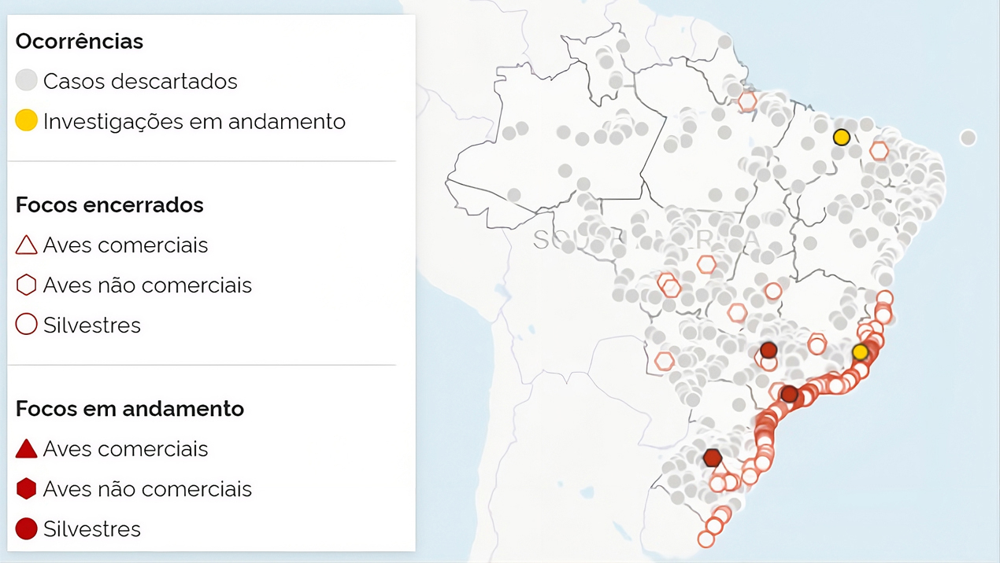

Vigilância em Saúde, Intersetorialidade e a Saúde única | Estudo de Caso: Influenza Aviária (H5N1)
Sobre esta aula
Nesta aula, você aprofundará a compreensão sobre a Vigilância em Saúde em tempos de transformação digital na perspectiva da Saúde Única através da Influenza Aviária de Alta Patogenicidade (H5N1). A partir desse estudo de caso, serão discutidos os desafios da Vigilância Cooperativa, da atuação intersetorial e da antecipação de riscos sanitários, evidenciando como a articulação entre saúde humana, saúde animal e saúde ambiental fortalece a capacidade de resposta diante de emergências sanitárias.
Ao longo da aula, serão apresentados os principais aspectos epidemiológicos da doença, os mecanismos de vigilância e biossegurança, os impactos sobre a biodiversidade, a produção animal e a saúde pública, bem como exemplos concretos de atuação colaborativa no contexto brasileiro.
Objetivos de
aprendizagem
Ao final desta aula, esperamos que você seja capaz de:
Discutir a vigilância da influenza aviária como um evento de relevância para a saúde pública, a sanidade animal, a conservação da biodiversidade e a economia, evidenciando o papel da vigilância integrada e da preparação para emergências em saúde sob a perspectiva Saúde Única.
Introdução
A emergência e a reemergência de zoonoses evidenciam que os riscos sanitários contemporâneos ultrapassam fronteiras geográficas, institucionais e disciplinares. Nesse contexto, a Influenza Aviária de Alta Patogenicidade (H5N1) representa um exemplo emblemático da necessidade de integração entre diferentes setores para a prevenção, detecção e resposta a eventos de interesse em saúde pública.
Nesta aula, o estudo desse caso permitirá compreender como a Vigilância Colaborativa, orientada pela abordagem Saúde Única, contribui para antecipar riscos, integrar informações provenientes da saúde humana, da saúde animal e do meio ambiente e fortalecer a tomada de decisão em diferentes escalas de atuação.
H5N1: Vigilância Integrada e Antecipação de Riscos
A emergência e a reemergência de zoonoses de alta patogenicidade têm evidenciado, de forma cada vez mais clara, o caráter transfronteiriço dos riscos sanitários contemporâneos. O vírus Influenza Aviária de Alta Patogenicidade (IAAP) subtipo H5N1 constitui um exemplo emblemático desse cenário, ao demonstrar como agentes infecciosos podem atravessar fronteiras geográficas, ecológicas e institucionais, conectando saúde animal, saúde ambiental e saúde humana em uma mesma dinâmica de risco (WHO, 2023).
A Influenza Aviária, também chamada de gripe aviária, é causada pelo vírus da Influenza A, pertencente à família Orthomyxoviridae, sendo classificado em subtipos conforme as proteínas existentes no envelope viral (hemaglutininas - 16 subtipos - e neuraminidases - 9 subtipos). As aves aquáticas silvestres são consideradas os reservatórios naturais do vírus, como as pertencentes à ordem Anseriformes (patos, gansos, cisnes) e Charadriiformes (maçaricos, gaivotas, trinta-réis). Os subtipos H5 e H7 são os mais relevantes no que se refere à saúde animal, e, apesar dos vírus do gênero Influenza A infectarem predominantemente aves, também possuem capacidade de se propagar em mamíferos, incluindo os seres humanos (BRASIL, 2023).
A circulação global do H5N1, intensificada a partir de 2020, vem sendo associada a rotas migratórias de aves silvestres, à intensificação da produção avícola e à ampliação das interfaces entre sistemas naturais e antrópicos. Nesse contexto, o Brasil passou, nos últimos anos, da condição de país livre da circulação do vírus em aves silvestres para um território que vivencia eventos sucessivos de detecção viral em fauna silvestre, ambientes costeiros, unidades de conservação, sistemas produtivos e instituições de manejo de fauna, como zoológicos (FAO; WOAH; WHO, 2022).
A abordagem Saúde Única oferece a estrutura conceitual necessária para compreender essa complexidade, ao reconhecer que o risco sanitário não se restringe a um setor específico, mas emerge das interações entre organismos, ambientes e práticas humanas. A vigilância, nesse contexto, deixa de ser apenas um mecanismo de resposta a eventos consumados e passa a operar como instrumento estratégico de antecipação de riscos.
O Caráter Transfronteiriço das Zoonoses
A IAAP ilustra de forma precisa o caráter transfronteiriço das zoonoses. Trata-se de um vírus cuja dinâmica de circulação não respeita limites administrativos ou políticos, sendo fortemente influenciada por fluxos ecológicos, como a migração de aves aquáticas e marinhas. Esses movimentos conectam continentes, oceanos e ecossistemas distintos, permitindo a disseminação viral em escala global (WOAH, 2023).
No Brasil, a detecção do H5N1 em aves silvestres ao longo do litoral e em áreas úmidas reforça essa dimensão transfronteiriça. Um exemplo relevante é a ocorrência de casos associados à região do Estação Ecológica do Taim, área estratégica para aves migratórias no sul do país. A presença do vírus nesse território evidencia como eventos sanitários locais estão inseridos em uma rede ecológica internacional, exigindo vigilância articulada em múltiplas escalas (BRASIL, 2023).
Além das aves, a ocorrência do vírus causador da IAAP em leões-marinhos ao longo da costa do Rio Grande do Sul reforça que o vírus ultrapassa a interface estrita entre aves e humanos, alcançando mamíferos silvestres e ampliando o espectro de preocupação sanitária. Eventos semelhantes já haviam sido registrados em outros países da América do Sul, demonstrando um padrão regional de circulação viral (PAHO, 2023).
Os primeiros focos de IAAP no Brasil foram desafiadores, embora o serviço veterinário oficial estivesse constantemente em alerta realizando vigilância, a ocorrência dos primeiros casos foi a oportunidade de colocar em prática todo o conhecimento adquirido em treinamentos e capacitações ao longo de vários anos. Um dos pontos fortes foi a comunicação institucional, trazendo informações atualizadas, muitas vezes praticamente em tempo real, visando tranquilizar a sociedade e o mercado avícola, considerando os impactos que a ocorrência deste vírus pode trazer para a cadeia produtiva e a segurança alimentar.
Desde maio de 2023, o Ministério da Agricultura, Pecuária e Abastecimento (MAPA) disponibiliza um painel, conforme você pode ver na imagem a seguir, com todas as suspeitas de IAAP em atendimento no país. O painel é atualizado duas vezes por dia e pode ser acessado por qualquer pessoa interessada neste site.

Legenda: Painel de investigações de Síndrome Respiratória e Nervosa das aves investigadas pelo Serviço Veterinário Oficial Fonte: MAPA, 2026 (Acesso em 10/08/2026)
Para reforçar a importância da influenza aviária no contexto da Saúde Única trazemos como exemplo o Comunicado de Risco emitido pelo Centro Estadual de Vigilância em Saúde do Rio Grande do Sul (CEVS-RS) publicado em 30 de maio de 2023 trazendo diversas informações sobre a prevenção do contágio e as estratégias a serem adotadas em humanos, demonstrando o alinhamento entre as Secretarias Estaduais de Agricultura e Saúde.
Saiba mais
Se quiser saber mais sobre o caráter transfronteiriço e ocorrência de H5N1 em aves e animais marinhos nas Américas, veja as nossas sugestões de leitura:
Se desejar aprofundar seus conhecimentos sobre a circulação da Influenza Aviária de Alta Patogenicidade (H5N1) nas Américas, consulte os materiais produzidos por organismos nacionais e internacionais de referência:
Portal sobre Influenza Aviária – Organização das Nações Unidas para Alimentação e Agricultura (FAO), com documentos técnicos, orientações e análises sobre a doença em escala global.
Aves Silvestres, Produção Avícola e Saúde Humana
A relação entre aves silvestres, produção avícola e saúde humana constitui um dos eixos centrais para a compreensão do risco associado ao H5N1. As aves silvestres, especialmente as aquáticas migratórias, atuam como reservatórios naturais do vírus, frequentemente sem apresentar sinais clínicos evidentes. Ao entrarem em contato com ambientes produtivos, direta ou indiretamente, podem introduzir o vírus em sistemas avícolas comerciais ou de subsistência (FAO, 2023).
Em março de 2023, considerando o cenário epidemiológico da IAAP nos diversos continentes, especialmente nas Américas, a Organização Panamericana da Saúde (OPAS) emitiu um alerta demonstrando preocupação com os crescentes focos em aves selvagens e mamíferos terrestres e aquáticos. Neste contexto salientou que sempre que o vírus acomete aves comerciais (granjas) existe o risco de contaminação esporádica de seres humanos por contato com animais ou ambientes contaminados (OPAS, 2023).
Registro de casos de H5N1 em humanos — Período 2003 a 2023
10008006004002000
21
868
53%
PaísesCasosTaxa de mortalidade
Fonte: OPAS, 2023
No Brasil, esse risco tornou-se concreto com a confirmação de foco de Influenza Aviária de Alta Patogenicidade em uma granja comercial no município de Montenegro, no Rio Grande do Sul. Esse evento marcou um ponto de inflexão na defesa sanitária animal em nível nacional, ao demonstrar que a circulação viral em fauna silvestre pode, em determinadas condições, alcançar o sistema produtivo (BRASIL, 2023).
Do ponto de vista da saúde humana, embora a transmissão do H5N1 para humanos permaneça rara, o vírus é reconhecido por sua alta letalidade nos casos documentados. A preocupação central não se limita aos casos atuais, mas ao potencial de adaptação viral que permita maior transmissibilidade entre humanos, cenário amplamente discutido na literatura científica recente (WHO, 2023; Ke et al., 2024).
Nesse sentido, a vigilância integrada entre saúde animal e saúde humana é fundamental para reduzir riscos ocupacionais, proteger trabalhadores da avicultura, profissionais de manejo de fauna e equipes de vigilância, além de orientar medidas preventivas baseadas em evidências.
Saiba mais
Para saber mais sobre surtos de IAAP na América do Sul, leia um artigo produzido pela Embrapa, clicando aqui.
O Papel da Vigilância Como Instrumento de Antecipação de Riscos
Os eventos recentes envolvendo a IAAP no Brasil evidenciam o papel central da Vigilância Integrada como instrumento de antecipação de riscos sanitários em escala nacional, e não restrita ao contexto do Rio Grande do Sul.
Desde a detecção inicial do vírus em aves silvestres migratórias ao longo do litoral brasileiro, em 2023, foram registrados focos em diferentes unidades da Federação, incluindo estados das regiões Sudeste, Nordeste e Sul, o que reforça o caráter transfronteiriço e ecológico da circulação viral. A identificação precoce do vírus H5N1 em aves silvestres, mamíferos marinhos e ambientes naturais permitiu a adoção de medidas preventivas coordenadas visando prevenir a ocorrência de casos em humanos, demonstrando a efetividade da Vigilância Integrada na redução de riscos.
Nesse contexto, a atuação articulada entre a Defesa Sanitária Animal, a Vigilância Ambiental, a Vigilância da Fauna e a Vigilância Epidemiológica humana mostrou-se decisiva para o monitoramento de áreas sensíveis e de interfaces críticas entre fauna silvestre, ambientes produtivos e populações humanas.
No Rio Grande do Sul, destacam-se ações desenvolvidas em territórios estratégicos, como na Estação Ecológica do Taim e no litoral sul do estado, bem como em instituições de manejo de fauna, como por exemplo o Parque Zoológico de Sapucaia do Sul, onde protocolos de biossegurança, monitoramento sanitário e restrição de fluxos foram intensificados diante do risco identificado. Eventos semelhantes foram registrados em outras regiões do país, como no BioParque do Rio de Janeiro e no Jardim Zoológico de Brasília, nos quais a detecção de influenza aviária em aves sob cuidados humanos levou à interdição temporária, ao reforço das medidas de biossegurança e à intensificação da Vigilância, sem registro de casos humanos associados.
Saiba mais
A Estação Ecológica do Taim é uma Unidade de Conservação Federal, gerida pelo Instituto Chico Mendes, tendo sido o local do primeiro foco de IAAP no Rio Grande do Sul. Localizada nos municípios de Rio Grande e Santa Vitória do Palmar, em uma área de 32.806,31 hectares é uma importante área de conservação, com registros de 220 espécies de aves, 61 de répteis e 63 de peixes, entre outros animais.
Se quiser saber mais sobre a Estação Ecológica do Taim e seu plano de manejo, clique aqui.
Esses episódios, analisados de forma integrada, reforçam que a Vigilância, quando estruturada sob a perspectiva da Saúde Única permite reconhecer precocemente cenários de risco, orientar decisões intersetoriais e proteger a saúde humana, animal e ambiental de forma articulada e preventiva.
Os dados sobre os focos de gripe aviária citados podem ser consultados no painel disponibilizado pelo MAPA.
Em 2025 a Organização Mundial da Saúde publicou uma atualização epidemiológica sobre a Influenza Aviária A (H5) na Região das Américas onde foi possível constatar que, além da infecção de aves, diversas espécies de mamíferos estavam sendo acometidas pelo vírus, inclusive destacando os focos ocorridos em rebanhos leiteiros, que na época da publicação já eram 928 casos em 16 estados, demonstrando a importância desta enfermidade também no contexto da segurança alimentar, visto que o vírus foi detectado no leite de vacas experimentalmente inoculadas (ZANELLA; CIACCI-ZANELLA, 2025), sendo igualmente relevante como doença ocupacional considerando os casos humanos relacionados à exposição a bovinos e aves infectados (OPAS, 2025).
A Vigilância também se mostrou fundamental na gestão da comunicação de risco, ao esclarecer que o consumo de carne de aves e ovos permanece seguro quando oriundo de sistemas fiscalizados, evitando impactos desnecessários sobre a cadeia produtiva e reduzindo a disseminação de informações equivocadas (FAO; WOAH; WHO, 2022).
Sob a perspectiva da Saúde Única, a Vigilância deixa de ser compreendida como um conjunto de ações setoriais isoladas e passa a operar como um sistema integrado de observação, análise e decisão. A incorporação de dados ambientais, sanitários e produtivos permite não apenas responder a eventos em curso, mas antecipar cenários, orientar políticas públicas e fortalecer a resiliência dos sistemas de saúde frente a ameaças emergentes (PAHO, 2023).
A análise da ocorrência do H5N1 no contexto brasileiro evidencia que zoonoses de alta patogenicidade são fenômenos complexos, moldados por fluxos ecológicos globais, práticas produtivas locais e capacidades institucionais de Vigilância. O caráter transfronteiriço do vírus, a interface entre aves silvestres, produção avícola e saúde humana associados ao papel estratégico da Vigilância Colaborativa como instrumento de antecipação de riscos reforçam a centralidade da abordagem Saúde Única na gestão desses eventos.
O estudo de caso, que você verá no próximo tópico, aprofundará essa análise a partir de situações concretas vivenciadas no território, permitindo compreender como a Vigilância Colaborativa se materializa na prática e quais desafios emergem na articulação entre setores, escalas e saberes.
Estudo de Caso: IAAP (H5N1)
A introdução do vírus IAAP (H5N1) no território brasileiro representa um marco recente e relevante para a Vigilância em Saúde, ao evidenciar, de forma concreta, como zoonoses emergentes se manifestam a partir da interação entre fluxos ecológicos globais, sistemas produtivos e capacidades institucionais de resposta.
A análise desse evento, organizada de forma narrativa, permite compreender como a Vigilância atua de maneira sequencial e integrada, desde a detecção inicial do vírus em aves silvestres até a comunicação de risco à sociedade.
Detecção do Vírus em Aves Silvestres
O ponto de partida da narrativa do H5N1 no Brasil está associado à detecção do vírus em aves silvestres, especialmente espécies migratórias que utilizam áreas costeiras e zonas úmidas como locais de descanso, alimentação e reprodução. Essas aves desempenham papel central na ecologia do vírus, funcionando como reservatórios naturais e vetores de dispersão em escala continental.
A Vigilância da Fauna Silvestre, nesse contexto, assume caráter estratégico. A identificação de aves encontradas mortas ou com sinais clínicos compatíveis com influenza aviária desencadeia a coleta de amostras, realizadas pelo Serviço Veterinário Oficial (SVO), que é o responsável pelo atendimento das suspeitas de ocorrência de influenza em aves e nas outras espécies suscetíveis. Clique em cada etapa abaixo para ver esse fluxo na prática:
Recurso Interativo
O SVO recebe uma notificação sobre suspeita de ocorrência de influenza.
O SVO se desloca até o local da notificação.
O SVO realiza a coleta e o envio do material para diagnóstico laboratorial.
Do ponto de vista didático, é importante destacar que essa etapa antecede qualquer impacto direto sobre sistemas produtivos ou sobre a saúde humana, evidenciando o papel da Vigilância como instrumento de antecipação. A detecção precoce em aves silvestres permite reconhecer a circulação viral ativa no ambiente e sinaliza a necessidade de intensificação das ações de Vigilância em outros níveis. Assim como no caso da febre amarela com os bugios, o H5N1 evidencia que a fauna silvestre funciona como sentinela de riscos sanitários mais amplos, reforçando a lógica da Saúde Única.
Vigilância em Fronteiras e Áreas Costeiras
Uma vez confirmada a circulação viral em aves silvestres, a Defesa Sanitária Animal através do SVO estabelece maior Vigilância em territórios considerados estratégicos do ponto de vista epidemiológico, com destaque para fronteiras internacionais, áreas costeiras e zonas de intensa circulação de aves migratórias. Ao mesmo tempo há uma intensificação na divulgação das medidas de biosseguridade em granjas de produção de aves e ovos, considerando a presença do vírus e o maior risco de introdução na cadeia produtiva. Essas regiões operam como portas de entrada e de disseminação de agentes infecciosos, exigindo monitoramento contínuo e articulado.
No Brasil, a Vigilância em áreas costeiras ganhou centralidade diante da confirmação de casos em aves e mamíferos marinhos, alertando não somente a Defesa Sanitária Animal, mas também a saúde humana e o meio-ambiente, considerando o risco de perda massiva de indivíduos. A análise integrada dessas informações permite compreender que o risco não se restringe a um único grupo taxonômico, mas se expande conforme o vírus encontra novas oportunidades ecológicas de adaptação.
Do ponto de vista operacional, essa etapa envolve o fortalecimento da Vigilância passiva e ativa, a articulação com instituições de pesquisa e conservação, e o uso de informações territoriais para mapear áreas prioritárias. A Vigilância em fronteiras, por sua vez, destaca o caráter transfronteiriço desse agente, reforçando a necessidade de cooperação internacional e alinhamento com organismos multilaterais de saúde animal e humana.
Articulação Entre Saúde, Defesa Sanitária Animal e Meio Ambiente
À medida em que ocorre a identificação da circulação viral em ambientes naturais, torna-se indispensável a articulação entre os setores de Saúde, Defesa Sanitária Animal e Meio Ambiente. Essa articulação constitui um dos pilares da abordagem Saúde Única e se materializa de forma muito concreta no caso do H5N1.
Nesse contexto, o eixo de produção animal (SVO, produtores, empresas), em especial a cadeia avícola, passam a ocupar posição estratégica na Vigilância Integrada, sendo envolvidos de forma preventiva e sistemática a partir da confirmação da circulação viral em fauna silvestre. A intensificação das ações de biossegurança e do monitoramento de granjas não tem como objetivo apenas a mitigação de perdas econômicas diretas, mas a proteção do sistema produtivo como um todo, evitando que o vírus encontre condições favoráveis para se estabelecer, amplificar ou se disseminar em ambientes de produção intensiva. Mas não é só na produção de larga escala que existe o risco de contaminação, produções de pequena escala ou de subsistência (visam o consumo próprio de carne e ovos, por exemplo) também podem ser acometidas, necessitando dos mesmos cuidados aplicados nas granjas comerciais.
Um dos primeiros impactos observados diante da confirmação de focos de IAAP em granjas avícolas comerciais é a adoção de restrições sanitárias ao comércio internacional, com a suspensão temporária de exportações de produtos avícolas provenientes das áreas afetadas ou, em determinados casos, do país como um todo. Essas medidas decorrem de acordos sanitários internacionais e são fundamentais para preservar a credibilidade do sistema de Vigilância Agropecuária Nacional, ao demonstrar transparência e capacidade de resposta rápida.
Embora representem um impacto econômico relevante, tais restrições funcionam também como incentivo à adoção rigorosa de protocolos sanitários e à rápida contenção dos focos identificados. Cabe ressaltar que focos de IAAP em aves silvestres (vida livre ou em cativeiro) ou aves de subsistência não desencadeiam repercussões ou barreiras no comércio de produtos avícolas. No plano territorial, a Defesa Sanitária Animal opera por meio da definição de zonas, veja:
Áreas onde o foco de IAAP foi confirmado.
Áreas estabelecidas em um raio determinado a partir do local da detecção. Nesses locais são intensificadas ações como visitas às propriedades, interdição temporária de estabelecimentos, abate sanitário, restrição do trânsito de aves, ovos, ração e veículos, e ampliação da Vigilância Clínica e Laboratorial.
Esse zoneamento sanitário permite concentrar esforços onde o risco é maior, reduzindo a probabilidade de disseminação do vírus para outras regiões. Associada a essa medida, a implementação de vazios sanitários constitui uma das principais estratégias de biossegurança.
Outros mecanismos de biossegurança são igualmente reforçados nesse contexto, incluindo:
Controle rigoroso de acesso às granjas.
Obrigatoriedade do uso de equipamentos de proteção individual (EPI) por trabalhadores.
Adoção de barreiras físicas e sanitárias.
Manejo adequado de resíduos e carcaças.
Rastreabilidade de animais, insumos e produtos.
A orientação técnica aos produtores rurais e às empresas do setor é parte essencial desse processo, uma vez que a eficácia das medidas depende diretamente da adesão e da compreensão dos riscos envolvidos.
Do ponto de vista da abordagem Saúde Única, essas ações evidenciam que a biossegurança na produção avícola não se restringe à proteção econômica ou à sanidade animal, mas integra uma estratégia mais ampla de proteção da saúde humana e ambiental. Ao impedir que o H5N1 se estabeleça em sistemas produtivos intensivos, reduz-se não apenas o risco de disseminação entre aves, mas também a probabilidade de exposição humana e de eventuais eventos de adaptação viral. Assim, a articulação entre Defesa Sanitária Animal, setor produtivo e políticas públicas se consolida como um dos pilares centrais da resposta preventiva ao vírus no território.
Paralelamente, o setor ambiental contribui com a leitura ecológica do território, identificando áreas sensíveis, rotas migratórias e interfaces críticas entre fauna silvestre e atividades humanas. Já o setor saúde atua na avaliação do risco à população, na proteção de trabalhadores expostos e na preparação dos serviços de saúde para eventual atendimento de casos suspeitos.
Essa articulação intersetorial não ocorre de forma automática. Ela depende de fluxos institucionais claros, protocolos previamente estabelecidos e capacidade de comunicação entre áreas que historicamente operaram de forma setorializada. O H5N1, nesse sentido, funciona como um evento disparador que evidencia tanto as potencialidades quanto os desafios da governança integrada.
Medidas de Biossegurança
Com a confirmação da circulação do H5N1 no território, as medidas de biossegurança assumem papel central na contenção do risco. Essas medidas se aplicam tanto a sistemas produtivos quanto a instituições de manejo de fauna, como zoológicos, criadouros conservacionistas e centros de reabilitação.
Do ponto de vista narrativo, este é o momento em que a vigilância se traduz em ações concretas no território. Entre as medidas adotadas estão:
Controle de acesso a áreas sensíveis.
Suspensão temporária de atividades com potencial de exposição.
Uso de EPI por trabalhadores.
Revisão de protocolos de manejo animal.
A adoção dessas medidas antes da ocorrência de casos humanos reforça o caráter preventivo da Vigilância Integrada. Mais do que reagir a um dano já instalado, busca-se reduzir a probabilidade de que o vírus atravesse barreiras ecológicas e institucionais, alcançando a população humana.
Além disso, as medidas de biossegurança também cumprem função pedagógica, ao sensibilizar gestores, trabalhadores e a sociedade sobre a importância da prevenção e do cumprimento de normas sanitárias em contextos de risco emergente.
Comunicação de Risco à Sociedade
A etapa final desse processo diz respeito à comunicação de risco à sociedade, componente essencial da Vigilância em Saúde e frequentemente subestimado. No caso do H5N1, a comunicação adequada é fundamental para evitar pânico, desinformação e comportamentos que possam agravar o risco sanitário.
A comunicação de risco envolve esclarecer que a circulação do vírus em aves silvestres não implica, automaticamente, risco imediato à população humana. Ao mesmo tempo, é necessário informar de forma transparente sobre as medidas adotadas, as recomendações de biossegurança e os cuidados específicos para grupos mais expostos, como trabalhadores da avicultura e do manejo de fauna.
Um aspecto central dessa comunicação é reforçar que o consumo de carne de aves e ovos provenientes de sistemas fiscalizados permanece seguro, evitando impactos econômicos desnecessários e protegendo a cadeia produtiva. A clareza das mensagens contribui para fortalecer a confiança da sociedade nas instituições responsáveis pela Vigilância.
Sob a perspectiva da Saúde Única, a comunicação de risco não se limita à transmissão de informações técnicas, mas busca promover compreensão sobre a interdependência entre saúde humana, saúde animal e saúde ambiental. Ao explicitar essa interconexão, a Vigilância amplia sua capacidade de engajamento social e de prevenção de riscos futuros.
A narrativa da IAAP evidencia que a Vigilância Colaborativa em Saúde opera como um processo contínuo e integrado, e cada etapa se conecta à seguinte, formando uma cadeia de ações que tem como objetivo central a antecipação de riscos e a proteção da saúde coletiva. Veja:
Detecção de sinais da IAAP no ambiente.
Monitoramento de territórios estratégicos.
Articulação entre setores distintos e implementação de medidas de biossegurança.
Comunicação responsável à sociedade.
Legenda: Processo de comunicação de riscos em caso de IAAP Fonte: Campus Virtual Fiocruz
A influenza aviária não é somente "uma doença de aves" cuja responsabilidade de ações se limita à defesa agropecuária: a sua magnitude, o potencial para acometer outras espécies (inclusive humanos), o risco à segurança alimentar e as significativas perdas econômicas em granjas e demais estabelecimentos relacionados à cadeia avícola tornam essa enfermidade emblemática para a abordagem de Saúde Única pois transcende a área animal, englobando a saúde humana e o meio-ambiente nas ações de vigilância, prevenção e redução de riscos.
Assim como no caso da febre amarela, o H5N1 demonstra que a abordagem Saúde Única não é apenas um referencial teórico, mas uma prática concreta de gestão de riscos em contextos de elevada complexidade socioambiental.
Análise do Caso Sob a Perspectiva da Saúde Única
A análise da IAAP à luz da abordagem Saúde Única permite compreender, de forma integrada, como a circulação de um agente infeccioso de alta patogenicidade resulta da interação entre saúde animal, saúde ambiental, saúde humana e dinâmicas socioeconômicas. Diferentemente de agravos restritos a um único setor, esta zoonose exige respostas coordenadas, baseadas em vigilância contínua, leitura territorial e governança intersetorial.
Saúde animal: vigilância em aves silvestres e domésticas
A saúde animal constitui o eixo inicial da vigilância do H5N1. Como você viu anteriormente, a detecção do vírus em aves silvestres, sobretudo migratórias, funciona como sinal sentinela da circulação viral no ambiente, e é nesse momento que a Vigilância começa se apoiando em:
Notificações de mortalidade.
Monitoramento ativo em áreas estratégicas.
Diagnóstico laboratorial.
Essas ações permitem reconhecer precocemente cenários de risco, e em paralelo, a Vigilância em aves domésticas, especialmente em sistemas de produção avícola, atua de forma preventiva para evitar a introdução e a amplificação do vírus em ambientes de alta densidade animal. A integração entre esses dois níveis é fundamental, pois a circulação viral na fauna silvestre pode anteceder e condicionar riscos ao sistema produtivo, exigindo medidas rápidas de biossegurança e contenção.
Saúde Ambiental: Rotas Migratórias e Ecossistemas
A dimensão ambiental do caso evidencia que o H5N1 está fortemente associado a rotas migratórias de aves aquáticas e marinhas, que conectam ecossistemas distantes em escala continental e global.
Áreas úmidas, zonas costeiras e unidades de conservação funcionam como pontos de concentração dessas espécies, tornando-se territórios prioritários para a vigilância. Alterações nos ecossistemas, como degradação de habitats, mudanças climáticas e pressão antrópica podem modificar padrões migratórios e ampliar interfaces entre fauna silvestre, animais domésticos e áreas urbanizadas.
A abordagem Saúde Única reforça que a Vigilância Ambiental não é acessória, mas essencial para compreender a dinâmica ecológica do vírus e orientar ações preventivas baseadas no território.
Saúde Humana: Prevenção de Transmissão e Preparação do Sistema de Saúde
Como já mencionado nesta aula, embora a transmissão do H5N1 para humanos seja rara, o histórico global do vírus demonstra elevada letalidade nos casos registrados, o que justifica uma postura preventiva robusta.
A Vigilância Integrada permite que a saúde humana atue de forma antecipatória, protegendo trabalhadores expostos, orientando serviços de saúde para identificação precoce de casos suspeitos e garantindo a notificação oportuna. A preparação do sistema de saúde inclui protocolos clínicos, capacitação de equipes e articulação com a Vigilância Sanitária Animal, reduzindo a probabilidade de respostas tardias. Outra estratégia é o acompanhamento das pessoas (equipes do SVO, produtores rurais, tratadores etc.) que tiveram contato com aves que estão com suspeita de infecção pelo vírus H5N1, especialmente aquelas que venham a apresentar sintomas respiratórios. Nesse sentido, a integração com as diretrizes internacionais de organismos como a Organização Mundial da Saúde (OMS) e a Organização Mundial de Saúde Animal (OMSA) fortalece a consistência técnica e embasa as ações nacionais.
Impactos Socioeconômicos e Sanitários
Os impactos do H5N1 extrapolam o campo sanitário, alcançando dimensões socioeconômicas relevantes. Restrições temporárias às exportações de produtos avícolas, implementação de zonas com acesso restrito, vazios sanitários e interdições preventivas geram efeitos econômicos significativos, especialmente em regiões fortemente dependentes da avicultura. Neste momento, também é importante salientar o papel da saúde mental no apoio às pessoas que participam do enfrentamento dessa crise, sejam produtores rurais, médicos veterinários, gestores e demais envolvidos, considerando os impactos das ações e das perdas econômicas que venham a ocorrer.
Apesar dos efeitos econômicos, essas medidas preventivas são essenciais para preservar a credibilidade sanitária do país e evitar danos ainda maiores decorrentes da disseminação viral. Do ponto de vista sanitário, a antecipação de riscos reduz a probabilidade de casos humanos, evita consequências em saúde pública e reforça a confiança da sociedade nas instituições. Assim, a abordagem Saúde Única evidencia que proteger a saúde animal e ambiental é também uma estratégia de proteção econômica e social ao promover respostas equilibradas, baseadas em evidências e cooperação intersetorial.
Em síntese, o caso do H5N1 demonstra que a Vigilância Colaborativa em Saúde, quando orientada pela abordagem Saúde Única amplia sua capacidade de antecipação, qualifica a tomada de decisão e fortalece a resiliência dos sistemas sanitários frente a ameaças emergentes.
Atividade
Questão 01 de 03
Acertos: 0
Selecione uma opção para confirmar sua
resposta.
Resumo da aula
Nesta aula, você analisou a Influenza Aviária de Alta Patogenicidade (H5N1) como um estudo de caso para compreender a Vigilância em Saúde na perspectiva da Saúde Única. Foram discutidos o caráter transfronteiriço das zoonoses, a importância da vigilância integrada entre saúde humana, saúde animal e meio ambiente, bem como o papel da biossegurança, da comunicação de risco e da articulação intersetorial na prevenção e no enfrentamento de emergências sanitárias.
Ao longo do conteúdo, foi possível compreender que a vigilância vai além da resposta aos eventos já instalados, constituindo um instrumento estratégico para a antecipação de riscos, a proteção da biodiversidade, da saúde pública e dos sistemas produtivos.
Você concluiu esta aula, continue se empenhando nos seus estudos. Siga para a avaliação final do curso!